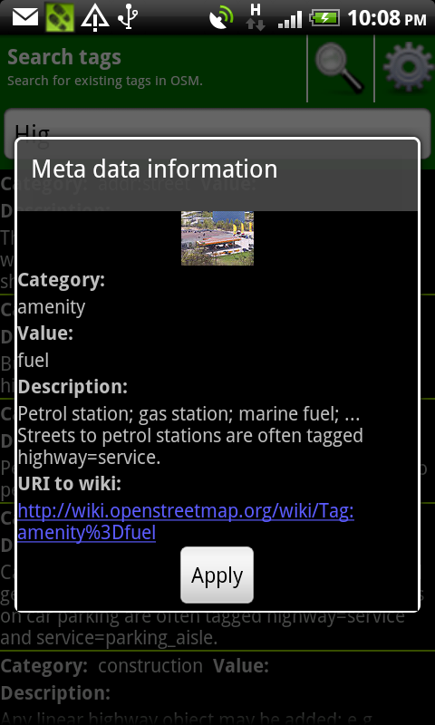

In this dialog you can perform a full text search based on the wiki description article related to tag value pairs.
Here you have a pretty nice way to find the right tag value pair which suites to your point of interest.
Just type something where you think it will suit to a valid tag value pair.
In our example we have typed "hig".As you can see you will get all results which contains the word "hig" in the description text and in the tag value pair.
As you type more characters in to the input field the search result will be updated.
Now you can select an item out of the result list and dialog will pop up with a detail view of the select search result item.
If you want to use the item as a tag value pair just press the apply button and the tag value will be set in to the previous dialog.